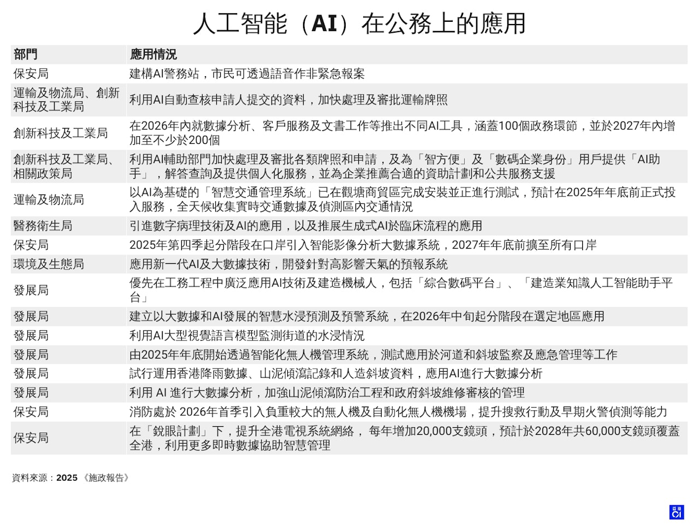
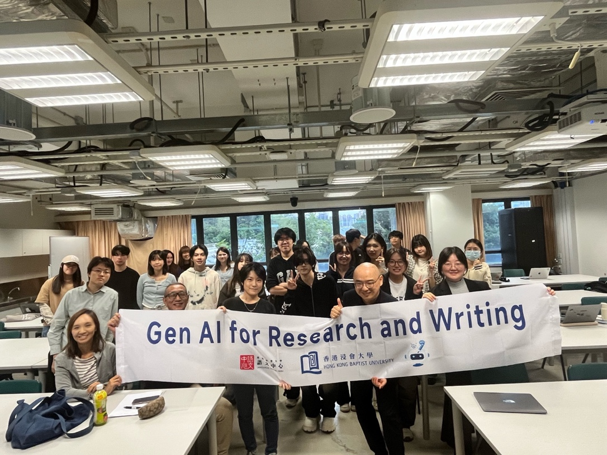

Long-form feature
Hong Kong at the AI Crossroads: Ready for Governance Revolution?
A city-wide push promises hyper-efficient, data-driven government. But ageing systems, rigid rules and a missing public consensus could turn the high-tech vision into a costly mirage.
On an ordinary Wednesday afternoon at the Yan Chai Hospital–Hong Kong Baptist University Chinese Medicine Clinic cum Training and Research Centre, registered Chinese medicine practitioner Cheuk Hok-fan has just finished the four diagnostic methods on a man in his seventies. As usual, he needs to review the thick stack of tumour marker reports the patient has just brought back from the mainland.
The elderly patient nervously hands over his phone. “Doctor, I asked DeepSeek about my tumour marker results from the mainland. It gave me pages of answers, but I can’t understand a word. Can you take a look?”
Cheuk smiles bitterly. Like many of his colleagues, he relies on AI almost every day, but only in secret. Before he dares type a single symptom, he meticulously blacks out the patient’s name, ID number and every other identifier, then feeds the AI a carefully anonymised summary: What does this tumour marker report mean? What are the clinical implications?
“If only our clinic computers had a secure intranet AI.”
Cheuk Hok-fan, registered Chinese medicine practitioner
“To me, AI is already powerful enough to act as a round-the-clock attending physician for both Chinese and Western medicine. It can instantly tell me, for example, if anything in the herbal formula I’m about to prescribe will cause a serious interaction with the Western drugs the patient is taking.”
Ten minutes away by car, in the Yan Chai Hospital under the same Hospital Authority umbrella, Dr. Mo’s afternoon looks entirely different. The moment an X-ray image appears on screen, the AI for internal use by the HA has already highlighted it in red with the label “no significant abnormality.”
“The Hospital Authority only began rolling out AI for report writing and imaging screening on a large scale after the pandemic in 2023 — barely two years ago,” Dr. Mo said.
Hong Kong stands at a technological and administrative crossroads of AI.
The 2025 Policy Address revealed an ambitious plan to embed AI into the very fabric of government operations, from administration and transportation to healthcare and public complaints. This push promises a future of hyper-efficient and data-driven governance.
However, AI researchers, policy analysts and doctors from the Hospital Authority reveal a stark reality: the city is grappling with fundamental challenges — outdated data systems, rigid regulations and a lack of public consensus. These obstacles could transform this high-tech vision into a costly mirage. The issue touches on Hong Kong’s public privacy, the future of its civil service and healthcare system, and the trajectory of the city’s development.
The Hospital Authority is a cornerstone of this ambitious vision. It has reshaped its five-year corporate strategy into a five-year digital-transformation IT blueprint that encompasses 20 strategic objectives and more than 100 individual projects. Building Asia’s leading smart hospital is explicitly listed as one of its strategic goals.
Professor Wang Haibo of Sun Yat-sen University told the South China Morning Post that, thanks to the vast health data stored in Hong Kong’s public-hospital clinical management system, the city has the potential to develop one of the world’s most advanced healthcare AI systems.
“Hong Kong therefore has the best opportunity in the world to develop the most advanced medical AI system.”
Professor Wang Haibo, Sun Yat-sen University
The HA began developing this clinical management system, now shared by all 43 public hospitals, back in the 1990s. As of last year, it already held at least 11 million patient records.
In March this year, the HA launched a pilot of its own in-house generative-AI technology in six public hospitals. The AI is used to help doctors rapidly draft medical records and reports, analyse radiology images, and perform predictive analytics on patient flow.
Dr Tony Ko Pat-sing, Hospital Authority Chief Executive, told Yahoo News that clerical time for staff has been slashed by 40 per cent with AI assistance, while overall workload has dropped by one-third.
Hong Kong is charging full speed ahead with its International Innovation and Technology Hub initiative, with “AI and data science” singled out as priority frontier fields.
But can Hong Kong actually pull it off?
Policy & implementation
What has Hong Kong’s government done so far?
Hong Kong is still in the early exploratory phase of AI governance. Prior to the 2025 Policy Address, it had cautiously initiated foundational measures in this area.
In 2017, the Smart City Blueprint incorporated AI into urban projects, such as smart building management and traffic management, aiming to enhance six key areas: smart mobility, living, environment, livelihood, government services and economy. However, subsequent impact has been limited.
Smart City BlueprintAI enters urban planning across six priority areas.
Ethical AI Framework updatedClearer guidance for government bureaux and departments.
Generative AI guidelineTechnical and application guidance is promulgated.
AI Efficiency Enhancement GroupA cross-government push to scale practical applications.
In view of the latest development of generative AI, the Digital Policy Office updated the Ethical AI Framework in August 2023 to provide clearer guidelines to bureaux and departments on developing applications with AI-related technologies. Sector-specific initiatives include the Hong Kong Monetary Authority’s guidance on AI in the financial sector, emphasising risk management and data privacy.
The DPO also promulgated the Hong Kong Generative Artificial Intelligence Technical and Application Guideline in April 2025.
Currently, the government is actively promoting AI applications in government services through pilot projects and policy-driven initiatives. The 1823 hotline employs AI for speech recognition and response generation, reducing processing time by approximately 30 per cent. The Census and Statistics Department has already used AI to review trade statistics and extract financial data from listed companies’ reports.

The newly established “AI Efficiency Enhancement Group,” led by Deputy Chief Secretary for Administration Cheuk Wing-hing, aims to coordinate government departments as they integrate AI into their operations.
“Objectively speaking, we started relatively slowly. But the government now has a clear plan and is genuinely working very hard to push AI development forward,” said Martin Cheung, Principal Researcher at the PoD Research Institute.
The DPO will roll out AI applications for data analysis, customer service and document processing, promoting extensive adoption across departments while ensuring security and controllability. Departments will also develop their own AI solutions.
“When we select departments for AI-driven efficiency upgrades, we deliberately target those whose services the public cares about most — and where citizens will be able to see clear, tangible changes,” Cheuk Wing-hing said.
The public-service case
Does governance require AI — and what role should it play?
Dr Liu Han, Research Director at the PoD Research Institute, voices the question on many people’s minds: “Does the Hong Kong government really need AI right now? What I can see is a government drowning in paperwork, overstaffed, bogged down by endless procedures and painfully slow — yet there seems to be no real motivation to change anything at all.”
The numbers from the 1823 hotline tell the same story.
Between 2018 and 2023, the 1823 hotline handled an average of approximately 1.95 million inquiries and 550,000 complaints annually. Around 7,400 cases were referred through the escalation mechanism due to departmental non-receipt. About 56 per cent took more than 30 days — exceeding the standard response timeframe set by government departments — before follow-up was completed, while approximately 7.5 per cent remained unresolved for over six months.
In December 2019, 1823 launched a text- and voice-enabled chatbot that uses AI to analyse questions submitted by the public in natural language, enabling automated responses to inquiries.
Secretary for Innovation and Technology Professor Sun Dong said that since 2023, the AI chatbot function of 1823 has been progressively enhanced. Its main operational stages have incorporated various AI technologies to improve efficiency in case intake, routing, referral, handling and resolution, with adoption rates continuously rising.
In 2023, digital self-service requests via 1823 reached 3.9 million, exceeding human-assisted services for the first time. The figure increased by 10 per cent year-on-year, accounting for 56 per cent of total requests.
“We will continue analysing operational data and case handling workflows to strengthen the 1823 case routing and referral system, and broadly pilot AI technology across different stages and interfaces,” Sun Dong said.
Most public inquiries to 1823 can now be handled instantly, except for complaints, alleviating procedures that previously required prolonged waiting times.
“The greatest value of AI is not to replace humans, but to become the most powerful assistant.”
Lu Songtao, Assistant Professor, CUHK
“If we make good use of AI, especially AI agents, it can collect and synthesise massive amounts of public opinion in real time, dramatically improving the government’s response speed and the quality of its decision-making,” Lu said.
The limits beneath the ambition
The challenges ahead
“Hong Kong simply lacks the physical soil to develop AI. Computing requires massive electricity and water for cooling, but Hong Kong has none of these hardware facilities. On the physical level alone, Hong Kong has no fertile ground for growth,” Dr Liu Han said, cutting to the core of the obstacles.
What is more, behind every large language model lies an invisible social operating system. No matter how many generations it iterates through, its underlying value judgements, ethical priorities and even its definition of “common sense” are shaped by the societal order in which its training data and engineering teams were immersed.
ChatGPT · Gemini · Claude
Primarily trained in California and Washington state, carrying American concepts of medical privacy, free-speech primacy and individualistic ethics.
DeepSeek · Qwen · Doubao
Developed under a different data and regulatory regime, with another understanding of collective interest, social stability and pharmaceutical logic.
To this day, not a single mainstream large model has been born and raised in the unique soil of Hong Kong’s legal system, bilingual habits, healthcare framework or the parallel existence of Chinese and Western medicine.
“In the metaverse of AI, we have already lost at the starting line — because nothing understands Hong Kong people better than Hong Kong people themselves.”
Dr Liu Han, PoD Research Institute
A blueprint meets reality
Feasible — or wishful thinking?
In the 2025 Policy Address, the Hong Kong government drew itself an extraordinarily ambitious timetable.
Establish an Artificial Intelligence R&D Institute
Launch a Frontier Technology Research Support Scheme to attract the world’s top talent
Turn the Shenzhen–Hong Kong Science and Technology Innovation Zone into reality
Raise overall e-government efficiency
Expand digital pathology and generative AI across more facilities
Roll out voice reporting, AI licence approvals and an iAM Smart AI assistant
The blueprint is breathtakingly beautiful on paper. In reality, however, the voices that answer are a mixture of hope, scepticism, exhaustion and outright disbelief.
“The government can’t possibly train a Hong Kong-specific large model from scratch. In reality there are only two paths,” said Simon Wang, Innovation Officer at Hong Kong Baptist University.
Fine-tuning
Retrain an existing model with Hong Kong data. The cost: an enormous demand for GPUs and rented computing power.
Retrieval-augmented generation
Build a vector database of government documents so AI can look up information before answering. It uses far less computing power, but requires vast archives to become machine-readable first.

“Even if it’s technically feasible, you still have to consider the demographic structure,” Dr Liu said. “A huge portion of our users are elderly. How many of them actually know how to use a smartphone? The mainland has mature e-government because it has grid workers and neighbourhood offices executing layer by layer. Hong Kong doesn’t even have grid workers; how are we supposed to copy that model?”
“AI is already an unstoppable megatrend,” Professor Lu Songtao said. “Whether the government pushes aggressively or plays it conservative, the market has somehow already gone all-in. The academic world even more so — in the past year or two, even professors whose traditional research had nothing to do with AI have been pivoting. This momentum is basically impossible to reverse.”
According to the DPO, the government will accelerate the development of the Shenzhen–Hong Kong Technological Innovation Cooperation Zone. Leveraging the “one zone, two parks” advantage, it will promote collaboration between the two parks in innovative technology.
“Cooperation is not an option, it is inevitable, and it is always helpful,” Professor Lu added. “The Greater Bay Area has a huge market and Shenzhen’s data centres and computing power. These are precisely the most critical foundations for Hong Kong to develop high-end AI.”
But cooperation requires the government to establish clear policy and regulatory frameworks to protect intellectual property, economic interests and resource-sharing arrangements on both sides. “As long as this step is done well, the entire region will be the winner,” Lu said.
“It’s too slow right now. AI is definitely our best assistant.”
Cheuk Hok-fan looks forward to boldly pressing Enter on the clinic computer — openly and honestly.